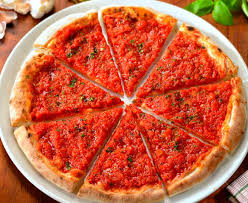
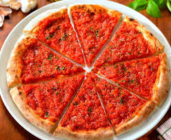
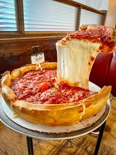
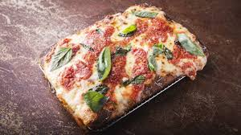
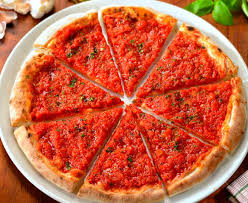

Berikut ini adalah beberapa macam jenis pizza yang disajikan lengkap dengan ciri khas yang dimilikinya.
1. California Pizza.
2. Pizza Neapolitan.
3. Pizza Sicilia.
4. Pizza Margherita.
5. Pizza Marinara.
6. Chicago Pizza.
California Pizza Pizza ini terkenal karena toppingnya yang kreatif dan tidak konvensional. Biasanya menggunakan bahan-bahan segar, lokal, dan sehat seperti sayuran organik, ayam panggang, alpukat, atau bahkan telur. Adonan pizza cenderung tipis seperti pizza ala Italia, tetapi gaya toppingnya lebih modern dan eksperimental.
Pizza Neapolitan Asal: Napoli, Italia. Pizza ini memiliki ciri khas adonan tipis di bagian tengah dengan tepi (cornicione) yang lebih tebal dan lembut. Dimasak di oven kayu dengan suhu sangat tinggi. Topping tradisionalnya sederhana: saus tomat, mozzarella segar, daun basil, dan minyak zaitun.
Pizza Sicilia (Sicilian Pizza) Pizza ini berasal dari Sisilia, Italia. Bentuknya biasanya persegi atau kotak, dengan adonan tebal dan fluffy. Topping tradisional meliputi saus tomat yang kaya rasa, bawang, anchovy, keju, dan rempah. Kadang ditaburi roti panggang atau remah roti agar teksturnya lebih renyah.
Pizza Margherita Salah satu pizza paling klasik dari Napoli, Italia. Toppingnya sangat sederhana: saus tomat, mozzarella, daun basil segar, dan sedikit minyak zaitun. Warnanya—merah, putih, dan hijau—melambangkan bendera Italia. Rasanya ringan, segar, dan autentik.
Pizza Marinara Pizza tradisional Napoli yang lebih tua dari Margherita. Toppingnya hanya saus tomat, bawang putih, oregano, dan minyak zaitun—tanpa keju. Sangat sederhana tapi kaya rasa, terutama karena saus tomat yang dimasak dengan rempah.
Chicago Pizza (Deep-Dish Pizza) Berasal dari Chicago, Amerika Serikat. Pizza ini memiliki adonan tebal seperti pie, dengan pinggiran tinggi. Keju diletakkan di bawah saus tomat tebal, kemudian ditambah topping seperti daging, sayuran, atau pepperoni. Dimakan dengan potongan besar karena teksturnya yang padat dan mengenyangkan.